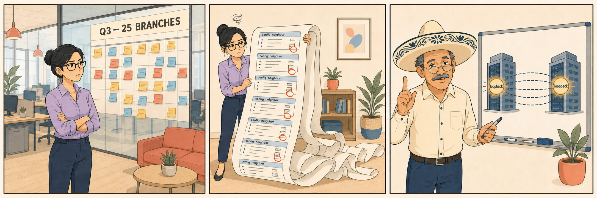

A Loopback Belongs to the Device
In which the peer address turns out to be an architectural decision, not a typing convenience.

Bendigo is not special. It has two internet services — ISP1 on port1, ISP2 on port2 — and each of them can reach both hubs, because Tuggers and Gunners each run dial-up IPsec servers on both of their own ISPs. Multiply it out and Bendigo carries four overlays, all of them members of its SD-WAN overlay zone.
| Overlay | Bendigo egress | Terminates at |
|---|---|---|
T1 | port1 — ISP1 | Tuggers |
T2 | port2 — ISP2 | Tuggers |
G1 | port1 — ISP1 | Gunners |
G2 | port2 — ISP2 | Gunners |
Three address spaces, kept apart on purpose
The whole design rests on refusing to let these three sets of addresses blur into one another. One of them belongs to paths. One belongs to devices. Only the second is safe to peer on.
| Address space | Belongs to | Behaviour under failure |
|---|---|---|
| Tunnel addresses a /32 per overlay from the hub's IPsec range | A path | Appears and disappears with the tunnel |
| Loopbacks one per device from the loopback pool | A device | Always up; independent of any interface |
| LAN prefixes | A site | The payload — what BGP exists to carry |
Give Tuggers 10.255.0.1, Gunners 10.255.0.2, Bendigo 10.255.1.14. Now look at what Bendigo's BGP configuration actually contains — and, more importantly, at what it does not contain.
config router bgp
set as 65000
set router-id 10.255.1.14
set ibgp-multipath enable
config neighbor
edit "10.255.0.1" # Tuggers LOOPBACK
set remote-as 65000
set update-source "loopback0" # source from MY loopback
next
edit "10.255.0.2" # Gunners LOOPBACK
set remote-as 65000
set update-source "loopback0"
next
end
end
Two neighbours. Not four. Four overlays exist and not one of them is named anywhere in the routing protocol. At Tuggers the block is the mirror image, plus set next-hop-self enable and the route-map-out written in EP-16.
How the session finds a path
BGP is TCP on port 179 and nothing more romantic than that. Bendigo needs to reach 10.255.0.1 and has no directly connected route to it, so it does what any host does — it consults the routing table and resolves recursively:
10.255.0.0/16 → via overlay zone → T1 (ISP1) or T2 (ISP2)
The loopback pool summary is advertised over the overlays. Bendigo picks a member, opens TCP from 10.255.1.14 to 10.255.0.1, and the session comes up. One session, riding whichever tunnel the routing table currently offers. The tunnel is a detail of transport, chosen after the peering was defined, and replaceable without the peering ever knowing.
Steady state, counted properly
This is the arithmetic that gets miscounted, so here it is laid out. The numbers change at every layer, and each change has a different cause.
| Layer | Count at Bendigo | Decided by |
|---|---|---|
| Overlays (IPsec tunnels) | 4 | 2 ISPs × 2 hubs |
| BGP sessions | 2 | How many peer addresses you configured — nothing else |
| BGP paths per prefix | 2 | One per session; installed together only with ibgp-multipath |
| SD-WAN members for that prefix | 4 → 2 | Recursive resolution of the hub loopback back out through the overlay zone |
A loopback belongs to the device. A tunnel address belongs to a path. Peer on the thing that survives the failure you are protecting against. The next hop is a hub loopback because of next-hop-self, and that next hop resolves back out through the overlay zone into two tunnels — which is where SD-WAN gets its members. Preference narrows four tunnels to two; recursion hands them back.
The Night ISP1 Died
In which a data-plane failure is absorbed entirely, and the control plane never finds out.
Port1 goes down at Bendigo. Two of the four overlays die with it. In the design we actually built, here is the complete sequence — and the interesting column is the last one.
| # | What happens | BGP session state |
|---|---|---|
| 1 | port1 goes down. T1 and G1 drop. | Established |
| 2 | Routes learned via T1 and G1 leave the FIB — including the 10.255.0.0/16 summary via those members. | Established |
| 3 | Bendigo re-resolves 10.255.0.1. Still reachable — now only via T2. | Established |
| 4 | The next TCP segment of the existing session leaves port2. Same source IP, same destination IP, same ports, same sequence numbers. | Established |
| 5 | No Open. No Notification. No withdrawal. No relearn. | Established |
| 6 | Hold timer never comes into play — default 180 s, against a FIB event measured in seconds. | Established |
The failure is absorbed entirely in the data plane. Uptime on the session is the evidence: run get router info bgp summary after the outage and the Up/Down column still reads hours, not seconds. If it reset, you did not build what you thought you built.
The counterfactual — four neighbours on tunnel addresses
Now run the same failure against the design we did not build. Bendigo peers on tunnel IPs, so there are four neighbours, four sessions, four copies of every Department prefix. ISP1 fails and two of those peer addresses simply cease to exist.
| Same failure, both designs | Loopback-sourced | Tunnel-peered |
|---|---|---|
| Peer definitions per spoke | 2 | 4 |
| Peer blocks for 25 branches, both hubs | 50 | 100 |
| Sessions that drop when ISP1 fails | 0 | 2 |
| Prefix withdrawals generated | None | Everything those sessions carried |
| Best-path re-run | Not triggered | Across the estate |
| Effect at the hub, ×25 branches | Nothing to see | Continuous peer rebuild churn |
Counting overlays and calling them sessions. Four tunnels exist — that part is correct and unchanged. But the number of BGP sessions is decided by how many peer addresses you configure and by nothing else. There is no "the ISP1 session to Tuggers", because once the peer address is a loopback it does not name a path. The tunnels never appear in the BGP configuration at all.
A tunnel-peered design converts every data-plane failure into a control-plane event — the exact event the overlay was built to absorb. Loopback peering does not make failover faster; it removes the need to fail anything over. The session was never on the broken path in the first place.
Bendigo — Four Overlays, Two Sessions
The same picture that gets miscounted. Solid boxes are devices; the dashed line is transport.
⚓ Hubs — loopbacks are the peer addresses
loopback0 10.255.0.1
next-hop-self · route-map-out
loopback0 10.255.0.2
next-hop-self · route-map-out
📡 Transport — four overlays, named nowhere in BGP
→ Tuggers
→ Tuggers
→ Gunners
→ Gunners
🐟 Spoke
2 neighbours · ibgp-multipath
update-source loopback0
zero sessions affected
next quarter
The Field Guide — Loopback-Sourced iBGP
The compressed version. Neighbour groups and peer ranges stand on all of it.
config router bgp.next-hop-self makes the next hop a hub loopback. That loopback resolves out through the overlay zone into two tunnels, so one BGP path still yields two SD-WAN members.get router info bgp summary # session state + Up/Down — should NOT reset on ISP loss get router info bgp neighbors 10.255.0.1 # confirms local + remote address are LOOPBACKS get router info routing-table details 10.255.0.1 # proves recursive resolution via the overlay zone diagnose ip address list # confirms loopback0 exists and is up diagnose vpn tunnel list # which overlays are up right now (transport, not sessions) GUI: Network > Interfaces > loopback0 | Network > BGP > Neighbors
What changes when ISP1 fails
| Item | Changes? |
|---|---|
| Tunnel interface state (T1, G1) | Down |
| FIB entries via those members | Removed |
| SD-WAN members available for a rule | Reduced |
| BGP peer address | Unchanged — it is a loopback |
| BGP session state | Established throughout |
| Prefixes in the BGP table | No withdrawal, no relearn |
| Egress interface of the session's TCP | Silently moves to port2 |
Peer address selection — exam distinctions
| Question | Loopback-sourced | Tunnel-peered |
|---|---|---|
| Sessions per spoke (2 ISPs, 2 hubs) | 2 | 4 |
Requires update-source | Yes — both ends | No |
| Requires reachability to the peer loopback | Yes — via the pool summary | n/a |
| Single link failure causes session reset | No | Yes |
| Paths per prefix per hub | 1 (plus ibgp-multipath for two hubs) | 2 — and they disagree under failure |
| Scales to a template | Yes — the peer address is estate-wide state | No — per-tunnel addressing per site |
Numbers worth remembering
| Value | Default | Why it matters here |
|---|---|---|
| BGP hold timer | 180 s | The window a reroute must beat. It is not close. |
| BGP keepalive | 60 s | One third of hold, by convention. |
| TCP port | 179 | The session is ordinary traffic and routes like it. |
| Peer blocks, 25 branches, both hubs | 50 | The number Mel refuses to hand-write — and the reason for what comes next. |